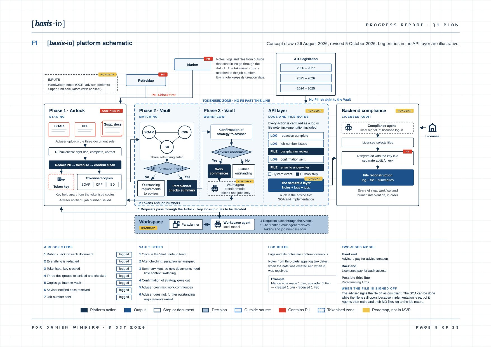

BASIS · BUILD PLAN
WORKING DECK · REV 0.1
FOR DAMIEN AND JASON · FRIDAY 16 OCTOBER 2026 | BASIS | SYDNEY, AUSTRALIA
Product · working session
[basis-io]
A working session on the plan: the approach, the dates and who does what.
BASIS · BUILD PLAN
WORKING DECK · REV 0.1
01 · WHY WE ARE HERE
PAGE 2 OF 23
Why we are here
01
Azure, built by Dean with Claude Code, in modules, on Jason’s dummy data.
02
Milestones to 18 December, with what each one shows and who it depends on.
03
Dean builds. Jason is the subject matter expert. Damien has oversight.
Agenda: 10 minutes on the decision, 20 on the drawing, 30 on modules and dates, 20 on who does what, 10 on the decisions list.
BASIS · BUILD PLAN
WORKING DECK · REV 0.1
02 · WHAT HAS BEEN DECIDED
PAGE 3 OF 23
What has been decided
One subscription, one resource group, a budget alert on day one. Microsoft 365 stays for email. Vercel serves screens only.
Claude Code writes the code against a brief, a drawing and a rule book in the repo. Dean directs, reads every change, runs the tests, merges.
One component at a time, each one demonstrable. Jason’s Bob and Tracy pack is the only data until the gates clear.
Why this way: the architecture gets tested by the person who has to defend it, Dean learns how the code works at the level a product owner needs, and a head of product inherits a repo with tests, records and infrastructure as code, not a rebuild.
BASIS · BUILD PLAN
WORKING DECK · REV 0.1
03 · FIG.01 · PLATFORM SCHEMATIC · PROGRESS REPORT, 5 OCT 2026
PAGE 4 OF 23

BASIS · BUILD PLAN
WORKING DECK · REV 0.1
03 · THE PLATFORM IN ONE DRAWING · FIG.02
PAGE 5 OF 23
The platform in one drawing
AIRLOCK · the secured platform · five containers around the Vault
CONTAINS PII
EVIDENTIARY LAYER · notes, logs and jobs indexed from tokenised data only · the job record and log, every step in order
CONTAINER
Front-end portal
Adviser signs in with MFA, creates a job, drops the three sets, sees status. Mobile app on the roadmap.
Advice Workspace
Paraplanner now, adviser later. Rehydration happens here with a key from the Key Store, never in the Vault.
VAULT · tokens and job numbers only · no route to the Key Store
Stage 1 · Airlock
Rubric check. Redact, tokenise, confirm clean. Token map written to the Key Store.
Stage 2 · Vault
Document matching for workflow. Three sets triangulated. Outstanding items back to the adviser.
Stage 3 · Advice construction
Strategy confirmed, SOA drafted on tokens. Frontier model through AI Foundry at gate 5.
Compliance Workspace
Licensee audit. Reads the log, selects a file, rehydrates in its own session. Back end, roadmap.
Key Store
Every token map and key. Key Vault, read by the tokeniser and the workspaces. No Vault identity can read it.
BASIS · BUILD PLAN
WORKING DECK · REV 0.1
04 · THE RULE THAT MAKES IT SAFE
PAGE 6 OF 23
The rule that makes it safe
Stage 1 replaces names, dates of birth, addresses, contact details and account numbers with tokens. Dollar figures and ages stay, so the matching can work.
Every token map and key sits in Key Vault, readable by the tokeniser identity, the workspaces and named admins. No identity inside the Vault can read it. Enforced by access policy, not by convention.
The Advice Workspace or the Compliance Workspace, inside the Airlock, in a session that is time-boxed and logged. Never in the Vault, never on Vercel.
Who, what, when, and what each request sent to the frontier model. The job log is the evidentiary record a licensee can be shown.
BASIS · BUILD PLAN
WORKING DECK · REV 0.1
05 · ONE FRONT DOOR, TWO WORKSPACES
PAGE 7 OF 23
The people in the Airlock
V1
The adviser signs in, creates a job, drops the SOA request, the client profile and the supporting documents, and watches the status: received, checked, tokenised, ready.
Next: a mobile app. Scan, upload and dictate meeting notes from the phone. The job starts before the adviser is back at a desk.
ROADMAP
Where the paraplanner works a job: the tokenised view by default, the real names only when the practice grants it. The same log-in as the portal, a different role.
Every request the paraplanner makes passes the tokeniser before it reaches the Vault. The adviser gets this workspace later.
ROADMAP
The licensee’s back end. Reads the job log, selects a file, rehydrates it with the key in a separate audit session, and sees every AI step and human intervention in order.
This is the second side of the two-sided model: advisers pay for advice creation, licensees pay for audit access.
BASIS · BUILD PLAN
WORKING DECK · REV 0.1
06 · BUILD PHILOSOPHY · SAFETY FIRST
PAGE 8 OF 23
Build philosophy
| Framework | What it is | What it means for the build |
|---|---|---|
| APP, 13 principles | The Privacy Act’s rules for personal information. The legal floor. APP 1, 5, 6, 8 and 11 bite hardest here: openness, notice, use, cross-border, security. | Privacy policy and collection notice before real data. Onshore by default. Use only for the adviser’s job. No PII to a frontier model. Whether basis-io is an APP entity is UNVERIFIED and needs legal advice. |
| ISO 27001 | An information security management system: policies, risk register, controls, evidence, audited. Certification is a later, paid exercise. | Design to the control set now: access control, cryptography, logging, supplier management, incident response. Keep the evidence as we go so certification is a collection, not a rebuild. |
| SOC 2 Type II | An auditor’s report on security, availability, confidentiality and privacy controls, operating over time. The report licensees and funds ask for. | Same control set, plus proof it ran: the job log, access reviews, change control through pull requests. A controls map in the repo ties each control to where it is met. |
| SOC 1 | Controls over a customer’s financial reporting. Relevant only where basis-io’s output feeds a licensee’s financial statements. | Hold it in scope but do not build for it until a licensee asks. Most will ask for SOC 2 and ISO 27001. |
A prototype cannot be certified against any of these, but it can be designed to their controls. That is cheaper now than after the build.
BASIS · BUILD PLAN
WORKING DECK · REV 0.1
07 · THE PROTOTYPE IN MODULES
PAGE 9 OF 23
The prototype in modules
| # | Module | What it does | Azure piece | When |
|---|---|---|---|---|
| 1 | Identity | Invite-only accounts, MFA, one log-in for all three roles | Entra External ID | V1 |
| 2 | Front-end portal | Create a job, drop the three sets, see status. No client data on Vercel | Vercel + Next.js | V1 |
| 3 | Job and upload | Job number first, then a one-time upload link scoped to that job | Azure Functions | V1 |
| 4 | Stage 1 · tokenise | Rubric check, redact, tokenise, confirm clean, write the token map | Blob, Container Apps, Presidio | V1 |
| 5 | Key Store and log | Token maps and keys held apart; every action logged, who, what, when | Key Vault, Azure SQL | V1 |
| 6 | Stage 2 · match | Three sets triangulated against Jason’s rubric; outstanding items back | Container Apps job | Dummy data |
| 7 | Advice Workspace | Paraplanner view, tokenised by default, requests pass the tokeniser | Portal role | Roadmap |
| 8 | Compliance Workspace | Licensee audit, rehydration in its own session, file reconstruction | Portal role, audit Airlock | Roadmap |
| 9 | Stage 3 · construct | Vault agent drafts on tokens; model and region chosen at gate 5 | AI Foundry | Gate 5 |
| 10 | Evidentiary Layer | Notes, logs and jobs indexed from tokenised data for the two workspaces | Azure SQL, Blob | Dummy data |
BASIS · BUILD PLAN
WORKING DECK · REV 0.1
08 · WHAT WE BUILD WITH
PAGE 10 OF 23
What we build with
MICROSOFT
V1
Azure
The platform. One subscription, one resource group, Australia East.
MICROSOFT
V1
Entra External ID
Sign-in and MFA for all three roles. Authenticator app as the second factor.
MICROSOFT · OPEN SOURCE
V1
Presidio
Finds and replaces PII. One container at Stage 1. Free to run.
AZURE
V1
Blob Storage, Functions, SQL
Airlock and Vault containers, job and upload functions, the job record.
AZURE
V1
Key Vault
The Key Store. Token maps and keys, access by policy.
AZURE
V1
Container Apps
Runs Presidio and the per-job agents on local models.
AZURE
V1
Log Analytics
Every action: who, what, when. Feeds the Evidentiary Layer.
AZURE
GATE 5
AI Foundry
Frontier model for Stage 3, Australia East. Needs funding. Not in V1.
VERCEL
V1
Vercel and Next.js
Serves the portal screens only. No client data on Vercel.
GITHUB
V1
GitHub and Actions
Code, pull requests, tests on every change, deploys to Azure.
ANTHROPIC
V1
Claude Code
Writes the code under Dean’s direction. Dummy data only.
NOTION · MICROSOFT 365
V1
Notion, Teams, Outlook
Project board, standing call and mail. No client data in any of them.
V1 runs on free tiers and pay-as-you-go. AI Foundry, the mobile app and a managed PII service need funding, so the working modules are shown and tested first.
BASIS · BUILD PLAN
WORKING DECK · REV 0.1
09 · MILESTONES TO 18 DECEMBER · PROPOSED
PAGE 11 OF 23
Milestones · proposed for agreement on Friday
20 OCT
Azure subscription, Entra tenant, storage, Key Vault, repo with branch protection. Nothing to demo yet.
23 OCT
Presidio reads a Bob and Tracy document from the Airlock, writes the tokenised copy to the Vault and the key to Key Vault.
30 OCT
Sign in, create a job, upload three sets, watch status, see the match result checked against Jason’s answer key.
27 NOV
Ten jobs through the pipeline, time saved recorded per job, indirect-identifier test set passed or failed in writing.
11 DEC
Inside Rocket’s own environment, only if gates 1 to 4 are cleared. Otherwise more test jobs and the gates stay the task.
18 DEC
What the pre-seed pays for, with numbers from the ten jobs. The seed story starts here.
Against the 5 October plan the first two dates move a week, because the SharePoint emulation is gone and Azure replaces it. The November and December dates hold. The long poles are legal advice and the external security review, which have to start now to make 11 December.
BASIS · BUILD PLAN
WORKING DECK · REV 0.1
10 · GATES BEFORE REAL CLIENT DATA
PAGE 12 OF 23
Gates before real client data
GATE 1 · LEGAL
Is basis-io an APP entity? Service agreement data terms. Whether tokenised data is still personal information in our hands. UNVERIFIED, needs advice.
GATE 2 · PRIVACY DOCUMENTS
A basis-io privacy policy and collection notice, APP 1 and APP 5, and a breach response plan. The website footer already links to a privacy page that does not exist.
GATE 3 · ADVISER SIDE
Advisers’ own privacy policies name basis-io as a service provider and say where the data is stored. Rocket’s policy is the first one to fix.
GATE 4 · SECURITY
External review or penetration test of the portal, the upload path and the Key Vault access path. A person signs this off.
GATE 5 · HOP 2
Which model provider sees Vault content, on what terms, in which region. Decided through AI Foundry in Australia East. Not needed for V1.
UNTIL THEN
Dummy data only. Jason’s Bob and Tracy pack, and nothing from a live client file, enters the system.
BASIS · BUILD PLAN
WORKING DECK · REV 0.1
11 · ROLES AND RESPONSIBILITIES
PAGE 13 OF 23
Roles and responsibilities
BASIS · BUILD PLAN
WORKING DECK · REV 0.1
12 · HOW WE WORK, HOW YOU SEE IT
PAGE 14 OF 23
How we work, how you see it
Twenty minutes. Dean shows what changed, on the live portal or the Azure console. Jason says whether it is right. Damien says whether a licensee would accept it. One decision per call if one is needed.
Modules as the top level, milestones from this deck, a risk register with owners. Updated after every call.
Each task has a done-when line. An agent writes the change on a branch. Dean reads the diff, runs the tests, merges. Nothing reaches main without a pull request and a passing test run. That is the change control SOC 2 asks for.
Open the portal on dummy accounts and test it. Leave comments on the brief, the schematic and this deck. Send document types and test cases as they come to mind.
BASIS · BUILD PLAN
WORKING DECK · REV 0.1
13 · RISKS AND CHALLENGES
PAGE 15 OF 23
Risks and challenges
| Risk | What it does to us | What we do | Owner |
|---|---|---|---|
| Time | Dean is not full-time until the pre-seed lands. Sales, the raise and the build compete for the same hours. | Modules small enough to finish in a week. Dates moved early when they need to move. | Dean |
| Code quality | A non-engineer directing agents can ship something that works and is not safe. | Rules in the repo, tests on every change, pull requests only, external review at gate 4. | Dean, Damien |
| Indirect identifiers | Occupation, suburb and age together can name a client with no name in the file. | Suburb to state. A test set from Jason with a pass mark. Managed PII detection as the fallback. | Jason |
| Model terms and region | The frontier model’s provider, terms or region fail a licensee’s test. | Decided at gate 5 through AI Foundry in Australia East. Not in V1. | Dean |
| Legal uncertainty | APP entity status and the tokenised-data question stay open and block real data. | Lawyer engaged in October, not December. UNVERIFIED until then. | Damien |
| Cost sprawl | A misconfigured container or model deployment runs up a bill unnoticed. | One resource group, budget alert on day one, free grants checked before relying on them. | Dean |
BASIS · BUILD PLAN
WORKING DECK · REV 0.1
14 · DECISIONS FOR FRIDAY
PAGE 16 OF 23
Decisions for Friday
1 · The approach. Azure, built by Dean with Claude Code, modules on dummy data.
2 · The names. Airlock, Vault, Stage 1 to 3, front-end portal, Advice Workspace, Compliance Workspace, Evidentiary Layer, Key Store.
3 · The Evidentiary Layer. Its own container in the Airlock, built from tokenised data only. Confirm.
4 · The dates. 20 and 23 October, 30 October, 27 November, 11 and 18 December.
5 · Jason’s inputs. Rubric and answer key by 24 October. Test cases by 31 October.
6 · Gates 1 and 4. Who Damien calls for legal advice and for the security review, and by when.
7 · The frameworks. APP, ISO 27001 and SOC 2 as the design baseline; SOC 1 held until a licensee asks.
Anything undecided gets an owner and a date.
BASIS · BUILD PLAN
WORKING DECK · REV 0.1
REV 0.1 · 15 OCT 2026 | BASIS | SYDNEY, AUSTRALIA
PAGE 17 OF 23
[basis-io]
BEFORE THE CALL
Read the brief rev 2 and Figure 2. Note any disagreements.
ON THE CALL
Seven decisions, made or dated. One owner per open item.
AFTER THE CALL
Rev 0.2 of this deck with the decisions in it. The Notion board live. Foundations up by 20 October.
BASIS · BUILD PLAN
WORKING DECK · REV 0.1
A1 · MODELS AND AGENTS
PAGE 18 OF 23
Appendix · Glossary · Models and agents
| Term | What it means | Where it applies in the solution |
|---|---|---|
| Local model | A language model small enough to run in our own container in Azure. Nothing leaves the resource group. Cheap, fully ours, less capable. | Stage 1 checks and Stage 2 matching. The per-job agents, in Container Apps. |
| Frontier model | The largest commercial models, run by a provider as a service. Far more capable. The data goes to that service, so region and terms matter. | Stage 3 only, through AI Foundry at gate 5. Sees tokens, never names. |
| Per-job agent | A local model started for one job with its tokenised files and the rubric, and shut down at sign-off. Nothing carries to the next job. | Stage 2. One agent per job number. Retired at sign-off. |
| Prompt | The instruction and text sent to a model in one request. Everything in it is visible to the model. | Every prompt box in a workspace passes the tokeniser first. |
| Token, two meanings | Here, the placeholder that replaces a name or number. A model provider also bills by “tokens”, meaning pieces of words. Unrelated. | Ours: Stage 1 and the Key Store. Theirs: the AI Foundry bill at gate 5. |
| AI Foundry | Azure’s service for running frontier and open models in a chosen region, with the provider’s terms attached. | Stage 3, Australia East, gate 5. Not in V1. |
| Model region and terms | Where a model runs and what its provider may do with the data. A licensee will ask for both in writing. | Risk register. Decided at gate 5, before any real client file. |
BASIS · BUILD PLAN
WORKING DECK · REV 0.1
A2 · DATA HANDLING
PAGE 19 OF 23
Appendix · Glossary · Data handling
| Term | What it means | Where it applies in the solution |
|---|---|---|
| PII | Personally identifiable information. Anything that names a client or can be joined to name one. | The brief’s PII scope. Found at Stage 1 by Presidio. |
| Indirect identifier | A detail that is not a name but narrows a person down: occupation, suburb, employer, a rare job with an exact age. | Suburb reduced to state. Jason’s test set with a pass mark. |
| Redaction | Removing a detail from a document entirely. The reader sees a blank. | Stage 1, for details the workflow does not need. |
| Tokenisation | Replacing a detail with a placeholder that stands in for it consistently, so one client is the same token on every page. | Stage 1: names, dates of birth, addresses, contacts, account numbers. |
| Token map | The list that pairs each token with its real value. Holding it is the same as holding the data. | Written at Stage 1. Held only in the Key Store. |
| Key | What unlocks one job’s token map. Issued to a person in a workspace session, never to the Vault. | Key Store. Used in the Advice and Compliance Workspaces. |
| Rehydration | Putting the real values back in place of the tokens, so a person reads the file as the client wrote it. | Advice and Compliance Workspaces only. Time-boxed and logged. |
BASIS · BUILD PLAN
WORKING DECK · REV 0.1
A3 · THE PLATFORM · BOUNDARIES
PAGE 20 OF 23
Appendix · Glossary · The platform
| Term | What it means | Where it applies in the solution |
|---|---|---|
| Airlock | The outer secured boundary. Everything that can identify a client lives inside it. Five containers plus the Vault. | Figure 2. One Azure resource group in Australia East. |
| Vault | The inner area where work is done on tokens and job numbers only. No key, no token map, no route to the Key Store. | Stages 1 to 3. Blob containers and Container Apps. |
| Key Store | The Airlock container holding every token map and key. Access by policy: the tokeniser, the workspaces, named admins. | Azure Key Vault. Module 5. |
| Evidentiary Layer | The Airlock container that indexes notes, logs and jobs from tokenised data, so a workspace can show what happened, in order. | Azure SQL and Blob. Module 10. Read by both workspaces. |
| Stage 1 · Airlock | Receive, check against the rubric, redact, tokenise, confirm clean. | Presidio in Container Apps. Module 4. V1. |
| Stage 2 · Vault | Match the three sets for workflow and list what is missing. | Per-job agent on a local model. Module 6. Dummy data. |
| Stage 3 · Advice construction | Confirm the strategy and draft the SOA on tokens. | Frontier model through AI Foundry. Module 9. Gate 5. |
BASIS · BUILD PLAN
WORKING DECK · REV 0.1
A4 · THE PLATFORM · PEOPLE AND PROOF
PAGE 21 OF 23
Appendix · Glossary · The platform
| Term | What it means | Where it applies in the solution |
|---|---|---|
| Front-end portal | Where the adviser signs in, creates a job, uploads the three sets and watches status. Mobile app later. | Vercel and Next.js screens, Azure behind them. Module 2. V1. |
| Advice Workspace | Where the paraplanner works a job, tokenised by default, rehydrated on grant. The adviser gets it later. | Portal role inside the Airlock. Module 7. Roadmap. |
| Compliance Workspace | The licensee’s audit view: the log, the files, rehydration in a separate session. | Portal role inside the Airlock. Module 8. Roadmap. |
| Job record and log | One entry per step, in order: who, what, when, and what each request sent to a model. | Azure SQL and Log Analytics. Module 5. Feeds the Evidentiary Layer. |
| Three sets | The SOA request, the client profile and the supporting documents. A job is complete when all three match. | Uploaded at the portal. Checked at Stage 1. Matched at Stage 2. |
| Rubric | Jason’s written standard for what a complete set must contain and how the three sets are matched. | Stage 1 and Stage 2. Due 24 October. |
| Dummy data | Invented client files that look real and contain no real person. Jason’s Bob and Tracy pack. | Every demo, test and agent run until gate 5. |
| Gate | A condition that must be met before the next step. Five gates sit between the prototype and real client data. | Gates slide. Gates 1 and 4 are decision 6. |
BASIS · BUILD PLAN
WORKING DECK · REV 0.1
A5 · TOOLS
PAGE 22 OF 23
Appendix · Glossary · Tools
| Term | What it means | Where it applies in the solution |
|---|---|---|
| Entra External ID | Microsoft’s sign-in service for customers and partners. Invite-only accounts, roles, MFA. | Module 1. One log-in for adviser, paraplanner and licensee. |
| MFA | Multi-factor authentication: a password plus a second proof, here the Authenticator app on a phone. | Every sign-in to the portal and both workspaces. |
| Presidio | Microsoft’s open-source tool for finding and replacing PII in text and documents. | Stage 1, in one container. Module 4. |
| Container Apps | Azure’s service for running a program in a sealed container that starts and stops on demand. | Presidio and the per-job agents. |
| Key Vault | Azure’s service for holding secrets and keys, with access granted by policy to named identities. | The Key Store. Module 5. |
| Pull request | A proposed code change that is reviewed and tested before it joins the main code. | Every change. Nothing reaches main without one. |
| Claude Code | Anthropic’s coding agent, run from the terminal. Writes code to a brief under a person’s direction. | Dean’s build tool. Dummy data only. |
BASIS · BUILD PLAN
WORKING DECK · REV 0.1
A6 · FRAMEWORKS
PAGE 23 OF 23
Appendix · Glossary · Frameworks
| Term | What it means | Where it applies in the solution |
|---|---|---|
| APP | The thirteen Australian Privacy Principles under the Privacy Act 1988. | Design baseline. Lawyer at gate 1 on APP entity status. |
| ISO 27001 | The international standard for an information security management system: policies, controls, evidence. | Design baseline. Controls mapped as modules are built. |
| SOC 2 Type II | An auditor’s report that security controls were in place and operated over a period, usually six to twelve months. | Design baseline. The job log and change control are built for it. |
| SOC 1 | An auditor’s report on controls over financial reporting. Relevant only if a licensee’s auditors ask. | Held until a licensee asks. Decision 7. |
| Zero trust | A design rule: no identity is trusted because of where it sits. Every access is checked against policy. | The key never enters the Vault. Enforced by Key Vault policy. |
| Data residency | Keeping data inside a named country or region, and being able to show it. | Australia East for every Azure service, AI Foundry included. |
| Change control | Every change to the system is proposed, reviewed, tested and recorded before it goes live. | Pull requests and GitHub Actions. What SOC 2 asks to see. |